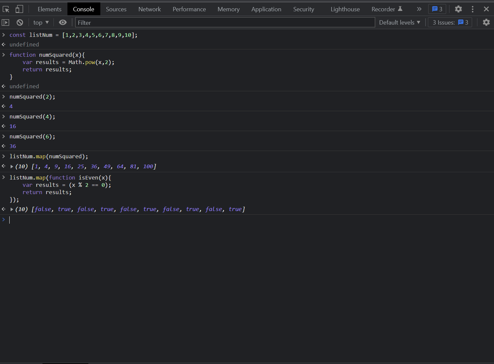
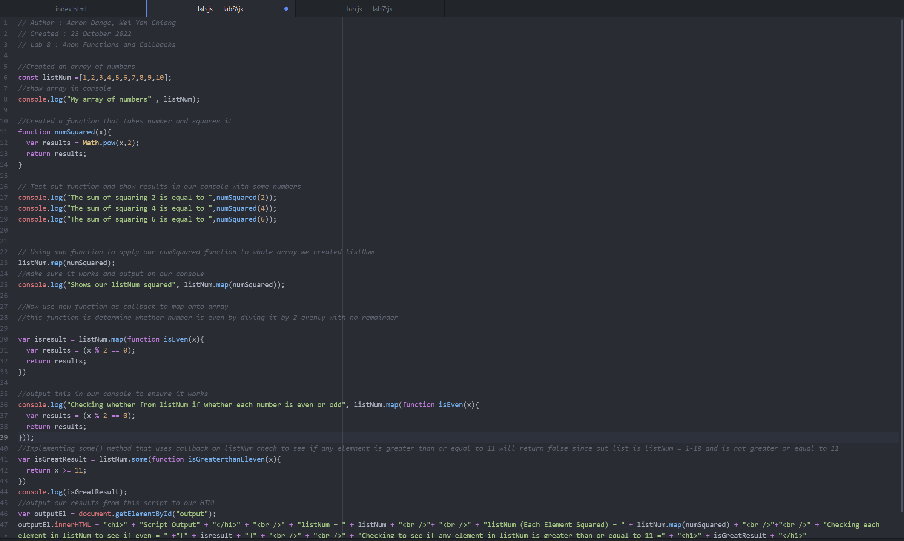

Challenges
Some challenges that we faced when doing the lab was learning about Anon functions and callbacks. It was something new so just getting familiar with it as well as learning .map() method for arrays to use all of items as parameters. Also using Callbacks as well overall was not too challening but a bit with learning new things.

Problems
Problems we faced was callbacks. Made an error and forgot to add function to the callback so it was not working. Besides from that it was pretty straightfoward for the most part.

Results
The resutls from conducting this lab and going through with it is learned about Anon functions and Callbacks. Also the map method was very useful and probably will implement in the future. You can see the Script output in the adjacent section.